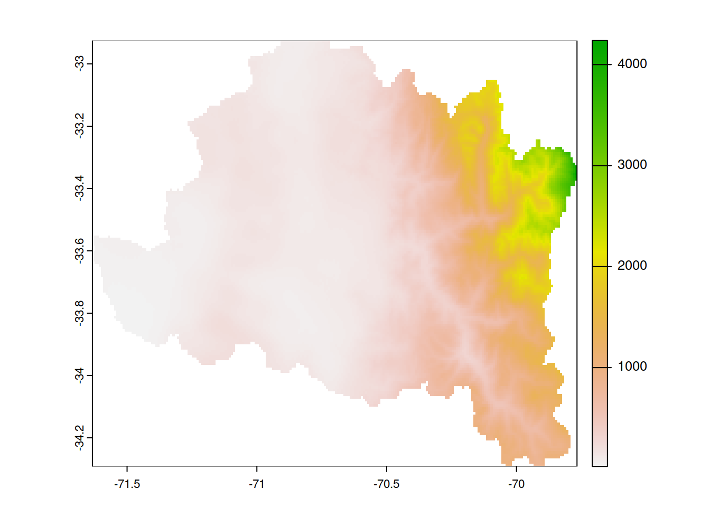
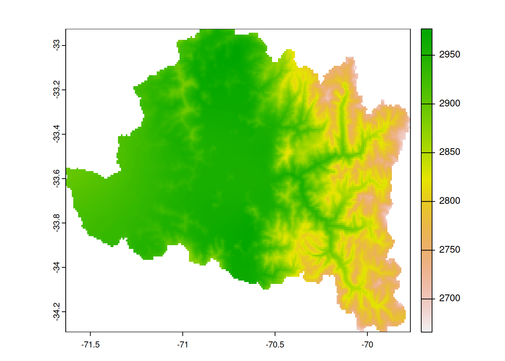
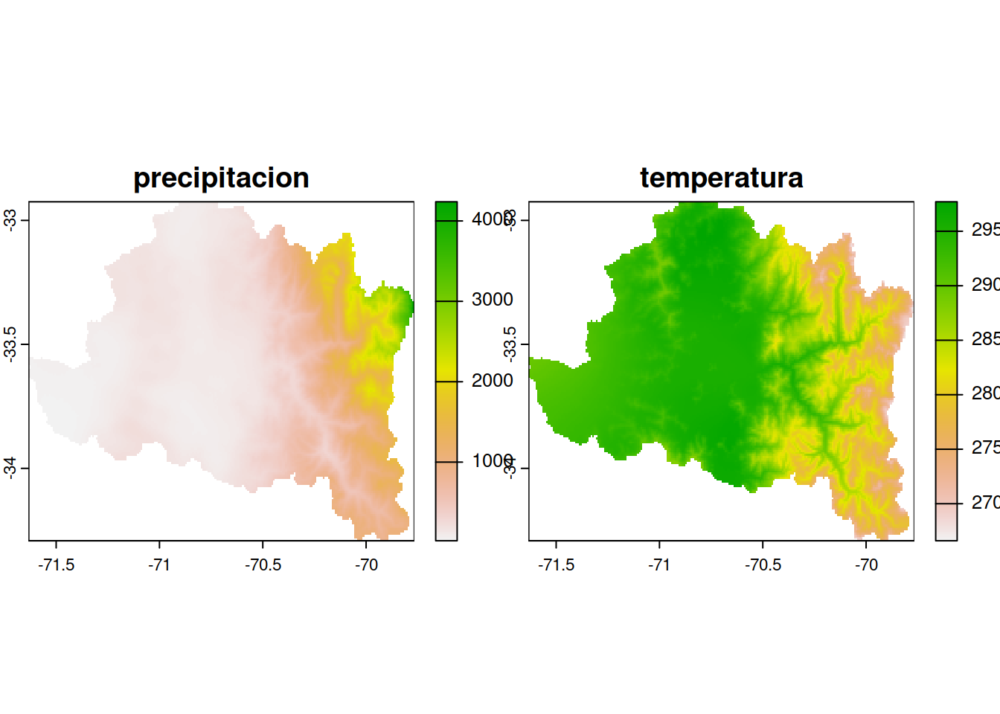
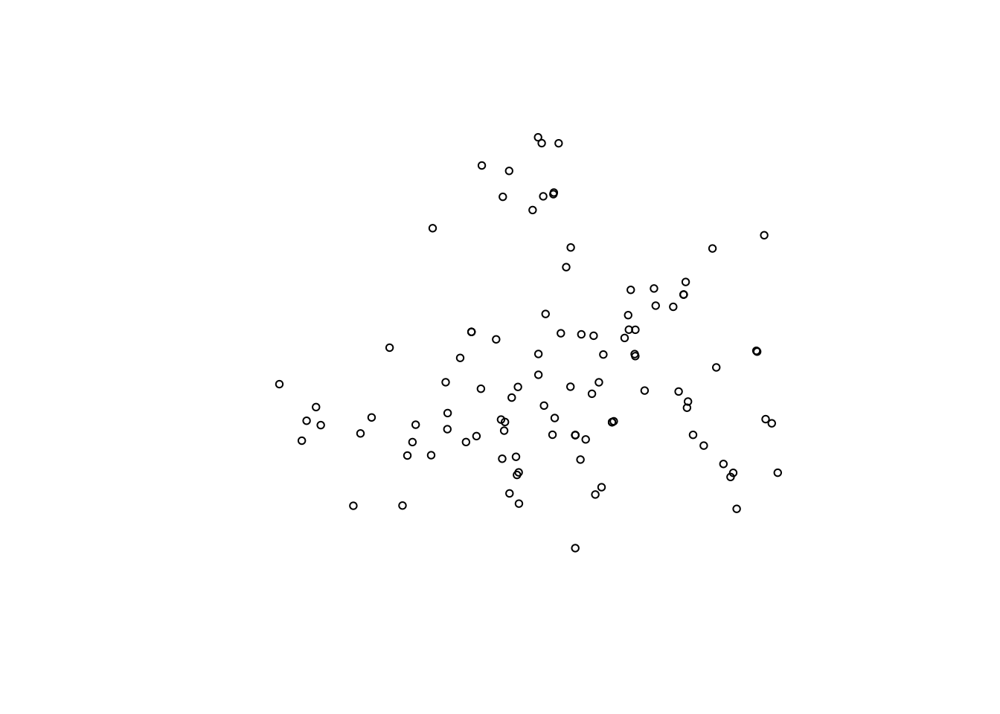

library(sf)Linking to GEOS 3.11.1, GDAL 3.6.2, PROJ 9.1.1; sf_use_s2() is TRUEcuencas <- read_sf('../../data/cuencas_Chile/Cuencas_BNA.shp')Para la evaluación debe trabajar con los siguientes datos geoespaciales.
Cuencas_BNA: Corresponden a las cuencas hidrográficas que se encuentran en Chile.Estaciones Chile: red de estaciones climáticas en Chile.CHELSA_pr_v2.1_20190101.tif: precipitación acumulada mensual para el mes de enero del año 2019 en Chile.CHELSA_tas_v2.1_20190101.tif: temperatura promedio mensual para el mes de enero del año 2019 en Chile.Los datos los debe descargar desde acá
library(sf)Linking to GEOS 3.11.1, GDAL 3.6.2, PROJ 9.1.1; sf_use_s2() is TRUEcuencas <- read_sf('../../data/cuencas_Chile/Cuencas_BNA.shp')estaciones <- read_sf('../../data/estaciones_chile/estaciones_chile.shp')library(terra)terra 1.7.39prec <- rast('../../data/CHELSA_pr_v2.1_20190101.tif')temp <- rast('../../data/CHELSA_tas_v2.1_20190101.tif')#cantidad de geometrias
length(st_geometry(cuencas))[1] 139length(st_geometry(estaciones))[1] 1196# cantidad de variables
# menos uno por que la columna geometria no cuenta como variable
ncol(cuencas) - 1[1] 2ncol(estaciones) - 1[1] 11# nombres de las variables
names(cuencas)[1] "COD_CUEN" "NOM_CUEN" "geometry"names(estaciones) [1] "estacion" "latitud" "longitud" "altitud" "codreg"
[6] "codprov" "codcom" "comuna" "institucio" "area"
[11] "region" "geometry" # sistema de referencia de coordenadas
st_crs(cuencas)Coordinate Reference System:
User input: WGS 84 / UTM zone 19S
wkt:
PROJCRS["WGS 84 / UTM zone 19S",
BASEGEOGCRS["WGS 84",
DATUM["World Geodetic System 1984",
ELLIPSOID["WGS 84",6378137,298.257223563,
LENGTHUNIT["metre",1]]],
PRIMEM["Greenwich",0,
ANGLEUNIT["degree",0.0174532925199433]],
ID["EPSG",4326]],
CONVERSION["UTM zone 19S",
METHOD["Transverse Mercator",
ID["EPSG",9807]],
PARAMETER["Latitude of natural origin",0,
ANGLEUNIT["Degree",0.0174532925199433],
ID["EPSG",8801]],
PARAMETER["Longitude of natural origin",-69,
ANGLEUNIT["Degree",0.0174532925199433],
ID["EPSG",8802]],
PARAMETER["Scale factor at natural origin",0.9996,
SCALEUNIT["unity",1],
ID["EPSG",8805]],
PARAMETER["False easting",500000,
LENGTHUNIT["metre",1],
ID["EPSG",8806]],
PARAMETER["False northing",10000000,
LENGTHUNIT["metre",1],
ID["EPSG",8807]]],
CS[Cartesian,2],
AXIS["(E)",east,
ORDER[1],
LENGTHUNIT["metre",1]],
AXIS["(N)",north,
ORDER[2],
LENGTHUNIT["metre",1]],
ID["EPSG",32719]]st_crs(estaciones)Coordinate Reference System:
User input: WGS 84
wkt:
GEOGCRS["WGS 84",
DATUM["World Geodetic System 1984",
ELLIPSOID["WGS 84",6378137,298.257223563,
LENGTHUNIT["metre",1]]],
PRIMEM["Greenwich",0,
ANGLEUNIT["degree",0.0174532925199433]],
CS[ellipsoidal,2],
AXIS["latitude",north,
ORDER[1],
ANGLEUNIT["degree",0.0174532925199433]],
AXIS["longitude",east,
ORDER[2],
ANGLEUNIT["degree",0.0174532925199433]],
ID["EPSG",4326]]# codigo epsg
st_crs(cuencas)$epsg[1] 32719st_crs(estaciones)$epsg[1] 4326#resolución
res(prec)[1] 0.008333333 0.008333333res(temp)[1] 0.008333333 0.008333333#número de filas
nrow(prec)[1] 4619nrow(temp)[1] 4619#Sistema de referencia de coordenadas
crs(prec)[1] "GEOGCRS[\"WGS 84\",\n ENSEMBLE[\"World Geodetic System 1984 ensemble\",\n MEMBER[\"World Geodetic System 1984 (Transit)\"],\n MEMBER[\"World Geodetic System 1984 (G730)\"],\n MEMBER[\"World Geodetic System 1984 (G873)\"],\n MEMBER[\"World Geodetic System 1984 (G1150)\"],\n MEMBER[\"World Geodetic System 1984 (G1674)\"],\n MEMBER[\"World Geodetic System 1984 (G1762)\"],\n MEMBER[\"World Geodetic System 1984 (G2139)\"],\n ELLIPSOID[\"WGS 84\",6378137,298.257223563,\n LENGTHUNIT[\"metre\",1]],\n ENSEMBLEACCURACY[2.0]],\n PRIMEM[\"Greenwich\",0,\n ANGLEUNIT[\"degree\",0.0174532925199433]],\n CS[ellipsoidal,2],\n AXIS[\"geodetic latitude (Lat)\",north,\n ORDER[1],\n ANGLEUNIT[\"degree\",0.0174532925199433]],\n AXIS[\"geodetic longitude (Lon)\",east,\n ORDER[2],\n ANGLEUNIT[\"degree\",0.0174532925199433]],\n USAGE[\n SCOPE[\"Horizontal component of 3D system.\"],\n AREA[\"World.\"],\n BBOX[-90,-180,90,180]],\n ID[\"EPSG\",4326]]"crs(temp)[1] "GEOGCRS[\"WGS 84\",\n ENSEMBLE[\"World Geodetic System 1984 ensemble\",\n MEMBER[\"World Geodetic System 1984 (Transit)\"],\n MEMBER[\"World Geodetic System 1984 (G730)\"],\n MEMBER[\"World Geodetic System 1984 (G873)\"],\n MEMBER[\"World Geodetic System 1984 (G1150)\"],\n MEMBER[\"World Geodetic System 1984 (G1674)\"],\n MEMBER[\"World Geodetic System 1984 (G1762)\"],\n MEMBER[\"World Geodetic System 1984 (G2139)\"],\n ELLIPSOID[\"WGS 84\",6378137,298.257223563,\n LENGTHUNIT[\"metre\",1]],\n ENSEMBLEACCURACY[2.0]],\n PRIMEM[\"Greenwich\",0,\n ANGLEUNIT[\"degree\",0.0174532925199433]],\n CS[ellipsoidal,2],\n AXIS[\"geodetic latitude (Lat)\",north,\n ORDER[1],\n ANGLEUNIT[\"degree\",0.0174532925199433]],\n AXIS[\"geodetic longitude (Lon)\",east,\n ORDER[2],\n ANGLEUNIT[\"degree\",0.0174532925199433]],\n USAGE[\n SCOPE[\"Horizontal component of 3D system.\"],\n AREA[\"World.\"],\n BBOX[-90,-180,90,180]],\n ID[\"EPSG\",4326]]"Río Maipo. Elimine las filas o columnas con NAs en los bordes del raster si es necesario.cuenca_maipo <- cuencas[cuencas$NOM_CUEN == "Rio Maipo",]
#transforma SRC de vectorial a raster
cuenca_maipo <- st_transform(cuenca_maipo,st_crs(prec))
# hace el crop, mask y trim
prec_maipo <- crop(prec,cuenca_maipo)
prec_maipo <- mask(prec_maipo,cuenca_maipo)
plot(prec_maipo)
# hace el crop, mask y trim
temp_maipo <- crop(temp,cuenca_maipo)
temp_maipo <- mask(temp_maipo,cuenca_maipo)
plot(temp_maipo)
# cambio SRC de estaciones a la del raster de precipitación
estaciones <- st_transform(estaciones,st_crs(prec))
estaciones_cuenca <- st_intersection(estaciones,cuenca_maipo)Warning: attribute variables are assumed to be spatially constant throughout
all geometriesprec_temp <- c(prec_maipo,temp_maipo)
names(prec_temp) <- c('precipitacion','temperatura')
plot(prec_temp)
prec_temp_ex <- extract(prec_temp,estaciones_cuenca)buffer_estaciones <- st_buffer(estaciones_cuenca,1000)
plot(buffer_estaciones$geometry)
writeRaster(prec_temp,'../../data/precipitacion_temperatura_cuenca_limari.tif')write_sf(cuenca_limari,'../../data/cuenca_limari.shp')write_sf(estaciones_cuenca,'estaciones_cuenca_limari.shp')write_sf(buffer_estaciones,'../../data/buffer_estaciones_cuenca_limari.shp')